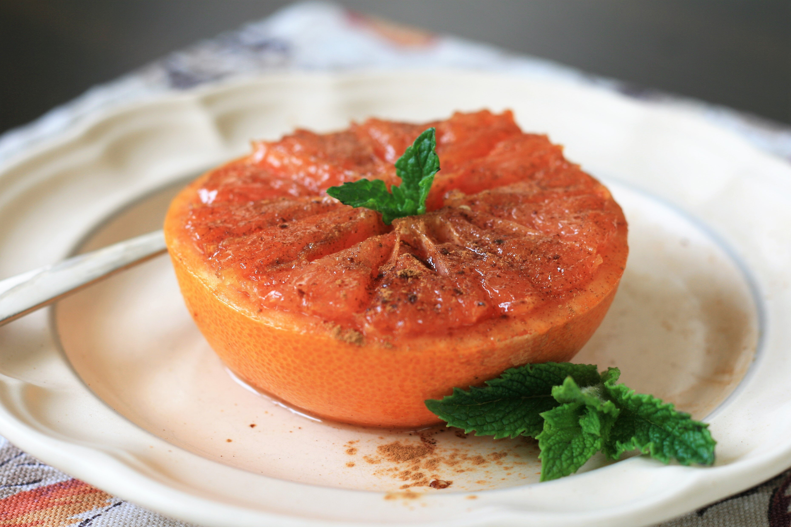

This warm juicy grapefruit with a buttery sweet topping is the perfect accompaniment to your Sunday brunch and also makes a lovely dessert or snack. I like to add a pinch of sea salt at the end to really bring out the flavors.
Preheat the air fryer to 400 degrees F(200 degrees C).
Cut grapefruit in half crosswire and slice off a thin sliver off the bottom of each half if the fruit isn't sitting flat. Use a sharp paring knife to cut around the outside edge of the grapefruit and between each segment to make the fruit to eat once cooked.
Combine softened butter and 1 tablespoon brown sugar in a small bowl. Spread mixture over each grapefruit half. Sprinkle with remaining brown sugar.
Cut aluminum foil into two 5-inch squares and place each grapefruit half on one square; fold up the edges to catch any juices. Set in the air fryer basket.
Broil in the air fryer until sugar mixture is bubbling, 6 to 7 minutes. Sprinkle fruit with cinnamon before serving.